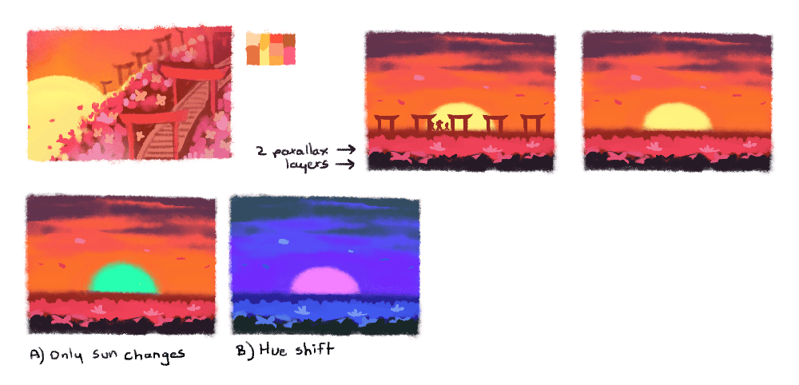
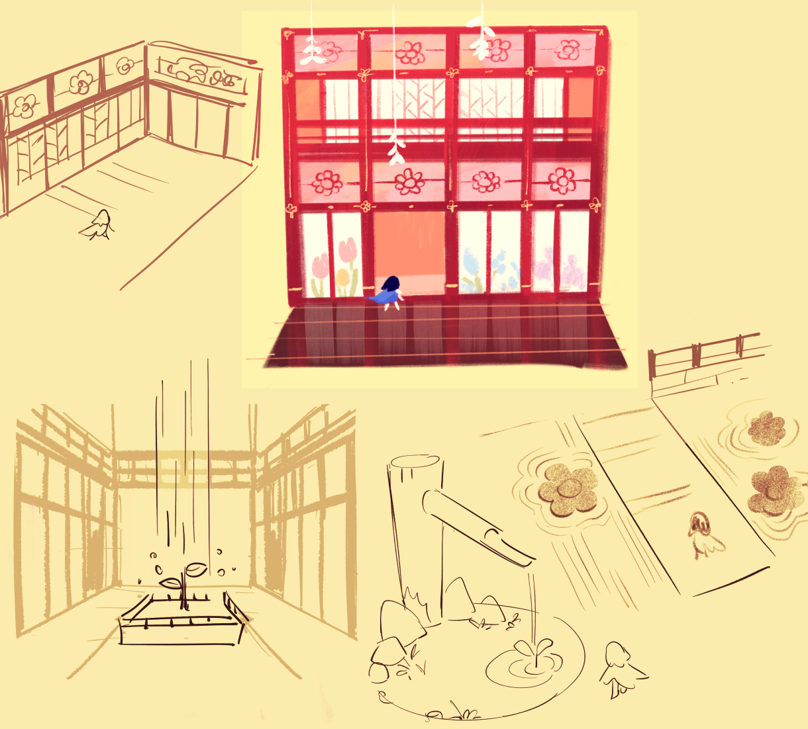
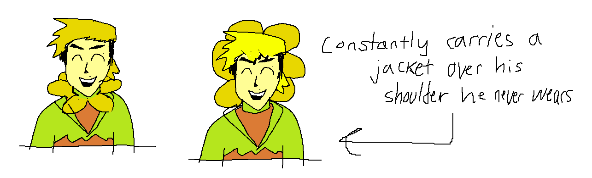
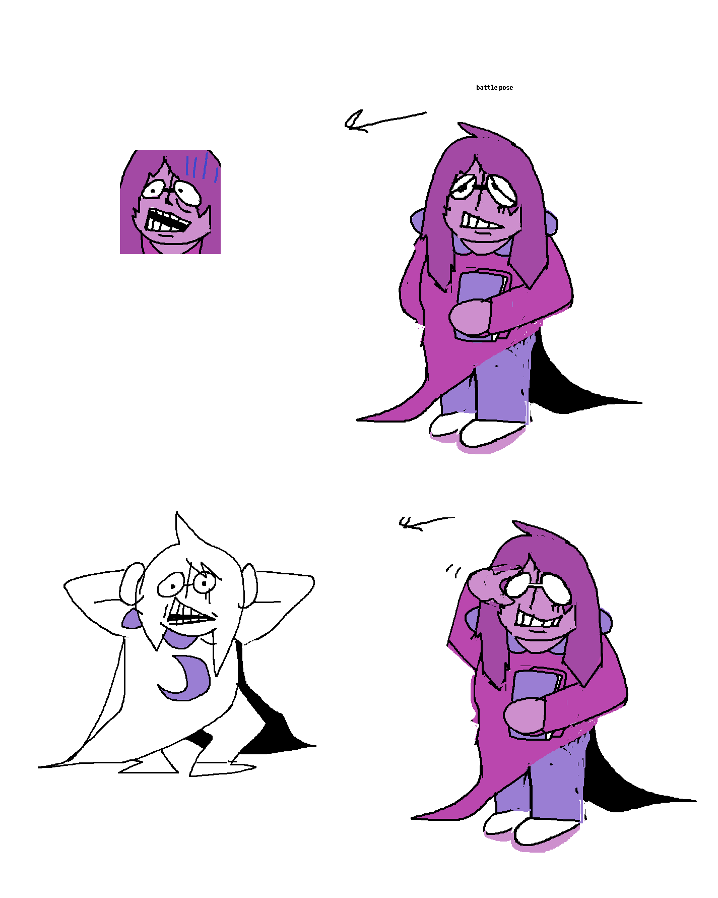

Chapter 5について思うこと

ではさっそく、Chapter 5の話を…
コンセプトとゲームプレイ
リリース前、僕はChapter 5について、「楽しいチャプター」と言いました。それがどういう意味だったのか、プレイしてくれたみなさんに伝わっているといいなと思います（つまり、「楽しい」ってことですけど）。いずれにせよ、ヘンテコで目立ちたがり屋で、「ちょっとズレた人気投票」で1位になりそうなダークナーキャラクターたちに焦点を当てたチャプターは、今後はもうありません。でも、『DELTARUNE』の物語全体の構成を思うと、そういうチャプターをもう1つ入れるには、ここしかなかったと思います。
Chapter 1から数えて、まだチャプターは4つしか進んでいなかったですが、それでも、Chapter 5は懐かしくて楽しい雰囲気と、真新しくて意外なコンセプトが共存するチャプターにしたいと思っていました。Chapter 1のBGMが再登場したり、『UNDERTALE』のコンセプトが元ネタになっているキャラクターたちが登場したり…
そして今回、新要素として、初めて「プラットフォーマーシステム」を導入しました。あちこちジャンプしたり、攻撃したり、「こうどう」したりできるシステムですね。このシステムの開発自体は2021年の10月にOndydev（『Tres-Bashers』などの制作者）が始めて、以降中断したり再開したりしていたんですが、最終的にはChapter 4の開発終盤に、開発チームの他のメンバーがOndyのプロトタイプを引き継ぎました。
Ondy制作、仮の敵キャラクターを使った初期の
プラットフォームアクションのサンプル。
今回も、ものすごい数のプロトタイプを作りました。プラットフォーマーシステムを取り入れることについては、デザイン上の難関がいくつかありましたが、最終版に実装されたものにはとても満足しています。
とはいえ、制作に当たっては、いろいろと気を配らないといけないこともありました…
それぞれの花の色で敵のプロトタイプを
作りましたが、すべては使いませんでした。
- 『DELTARUNE』は、キャラクター同士のやりとりに重点を置いたRPGです。完全なプラットフォームアクションゲームにしてしまったら、プレイヤーは、「なんで『Hollow Knight』の劣化版をやらされてるんだ？」と感じてしまうかもしれません。「DELTARUNE感」を損なわないようにする必要がありました。
- この点を踏まえて、キャラクターベースのユニークな要素を追加するために、「プラットフォームアクション中に『こうどう』できるシステム」を開発しました。2024年10月のことです。キャラクターごとにかなりの数の「こうどう」を検討しましたが、最終的にはラルセイの「ぶらさがる」とスージィの「ルードバスター」だけにするのがいちばん直感的だという結論に至りました。
- プラットフォーマーモード中にいろいろなことをするとおバカな会話が発生するようにしたことと、プラットフォーマー中にもRPGバトルがいくつか発生するようにしたことも、「DELTARUNEらしさ」を出すために追加した重要な要素です。これによって、プラットフォーマーモード中もゲーム本編から遠ざかりすぎないようにしました。
- もうひとつ、念頭に置く必要があったのは、人によってはこれが初めてのプラットフォーマーゲーム体験になるかもしれない、という点でした（怖いけど、ありえることです）。この時点まで、『DELTARUNE』ではプラットフォーマーゲームのスキルが一切必要ありませんでした。なので、ジャンプのアクションはなるべくシンプルに抑えました。とはいえ、高難易度の箇所を作るのも楽しすぎたので、サイドエリアに、チャレンジしがいのある箇所をいくつか入れてみました。楽しんでもらえたらうれしいです。
2つのプレイスタイルを切り替えて解くパズルを
いろいろ試作しましたが…多くは少し複雑で、
直感的に理解しにくいものになってしまいました。
プラットフォーマーシステム以外で難しかった点を挙げると、ストーリーのペースを乱すことなく、メインストーリーに8人もの新キャラが登場するチャプターを書くのは、なかなか骨が折れました。とはいえ、そのアイデア自体がよかったのかどうかは置いておいて、ストーリーを間延びさせることなくいろんな花たちのそれぞれの個性を見せるという点については、なかなかうまくやれたんじゃないかと思います。プレイしてくれた友だちはみんなそれぞれ好きな花が違うし、どの花も誰かから「いちばん好き」と言ってもらえているので、それだけで僕は満足です。

キャラクター - フラウリィ

今から10年前、みんなが『UNDERTALE』の「Flowey（フラウィ）」を「Flowery（フラウリィ）」と書き間違えていて、僕はイラついていました。そこで、「別の黄金の花のキャラを作って、その名前を『Flowery（フラウリィ）』にして、今度はそれをみんなが『Flowey（フラウィ）』と間違えたらおもしろいかも？」と思ったんです。
黄金の花のキャラクター「ゴールド」は、「フラウリィ」という姿の、自分にとっての「メアリー・スー（弱点や欠点がなく、非現実的なほど有能なキャラクター）」になることはできました。彼は完璧であろうとしている…けれど、残念ながら彼は、「生きる」とはどういうことなのかをまるで知らないのです。彼が考える「理想の人間像」はどう考えても異様で、ふつうじゃありません。見た目もよくあるアニメキャラみたいだし、どう見ても人間より背が高すぎます。テーマソングも、きっと彼が自分で選んで、どういうわけか自分で再生しているのでしょう… ちなみにこのテーマソングは、うろ覚えの『フルハ〇ス』のテーマソングを8秒分だけ切り取ったみたいな駄作です。それを彼はきっと、めちゃくちゃイケてると思っているのでしょう。
他の花たちについても、同じように考えてもらえればと思います。彼らの外見のデザインはなんだかちょっとヘンですが、それは、どんなふうになりたいか自分で決めないといけなかったからです。彼らのそれぞれの「夢」は、何の影響を受けた結果なんでしょうね…？（知らなくても困らないことだけど、考えるのは楽しいです）
いろいろ言いましたが、みなさんには「知ってたよ」と言ってもらえるとうれしいです。僕はただ、ゲームの中で描写されていることを取り上げているだけですからね。
ちなみにこちらは、アニメーション用に「スタジオカラー」の谷田部透湖さんが制作してくれたコンセプトアートです！（谷田部さんがアニメーション用に作ってくれた初期のコンセプトアートで、フラウリィの服装の最終版が決まりました）

フラウリィは状況によって外見が変わります。こんなふうにキャラクターのデザインに一貫性がないのが、僕は好きです。フラウリィみたいなキャラの場合は特に。一貫性がないのは、彼自身のせいかもしれません。
キャラクター - 他の花たち
他の花たちのコンセプトアートです。

ターコイズ - 彼女はすんなり描けました。見ればわかると思いますが、『東方プロジェクト』の影響を受けています。ちなみに、先日とある人と話していたら、その人は『東方プロジェクト』を知りませんでした。「『Bad Apple!!』知らない！？」と言ったら、「え、あれって初音ミク曲だと思ってた…」って。違いますよ…

モリス - 英語版では「Seth」で、『ガイア幻想紀』のキャラクターの「モリス（英語名はSeth）」に着想を得ています。どちらも紫色でメガネをかけていますが、それ以上の共通点はありません… 初期のコンセプトアートでは髪が白くて、肌はもっとラベンダーっぽい色調だったんですが、何人かの友だちに見せたら、みんな「うーん…なんかこれって…『スティーブン・ユニバース』（アメリカのテレビアニメ）の“あのキャラ”じゃ…？」と言うので、変えました。

グリーン - 見た目は、友だちのsplendidlandの画風に影響を受けています。splendidlandは、『DELTARUNE』のハッカーやQ-9を始めとするすばらしいキャラクターたちをデザインしてくれました。Chapter 5がリリースされるまで、このキャラクターのことは本人に知らせてもいなかったですけどね。

オレンジ - スプライトがものすごく小さいので、喜びの表情を表現するのが大変でした。ほら、見てください！いずれにせよ、花たちのうちの1人をネズミにするのは大事なことでした。それで、彼らが思う「ニンゲン」のイメージがどれだけゆがんでいるかが嫌というほど伝わってくると思うので。

{kind=link}
{kind=link}
{kind=link}
{kind=link}
{kind=link}
イエロー - デザイン案は2つありました。2016年10月に制作した初期のものにはもっとヒゲがあって、落ち着いたクールなキャラだったんですが、2020年1月に描き直しました。『トイ・ストーリー』のウッディの影響を少し受けています。Chapter 3で言及しているシャワーカーテンは、イエローの伏線です。僕が人生で意図的にカウボーイの伏線を張ったのは、それだけだと思います。

ブルー - ダイアログボックスに表示されるフェイススプライトでは、髪型が違います。彼の外見については、いくつかの可能性をお見せするのも楽しいと思ったんです。
敵キャラたちのデザイン
敵キャラたちのデザインについては、今回2人のゲストアーティストをお招きしました。
Nelnal - Chapter 5では、敵キャラ4体をデザインしてくれました。シノビートル、テラコタ、Pot Archer、それからMantis Dancerです。最終的に敵キャラとして実装されたのは、そのうち2体だけですが…（少なくともChapter 5では、ですけどね）
{kind=link}
{kind=link}
{kind=link}
ありがひとし - マンガ『ロックマン メガミックス』を描いた方で、最近人気の「オオニューラ」、「ハバタクカミ」、「オーガポン」など、たくさんのポケモンのデザインを手がけたことでも特に有名な日本人アーティストです。じつは、『ガイア幻想紀』など、いろんな名作ゲームのキャラクタースプライトも制作されてるんですよ！みなさん、知ってましたか！？
Chapter 5ではキツネのキャラクターを描いてくれて、僕がゲーム用に少し修正を加えて実装しました。

ちなみに、ありがさんも、ご家族も、最高にステキな方々です！！
ゲストミュージシャン
今回も、いろんな方々が音楽の制作を手伝ってくれました。
「夢と希望の庭園」- Carlos Eiene - 信じられないことですが、彼が最初の『UNDERTALE』ジャズアルバムを作ったのは、まだ子どものときだったんですよ。今回フィーチャリングできて、僕はめちゃくちゃうれしいです！
「らくいちバスター」 - らくいち - 前に発表した『DELTARUNE』のトレーラーに彼がアレンジしたバージョンの曲を使わせてもらったんですが、今回「夢と希望の庭園」を“豪華版”にしたので、バトルの曲も“豪華版”にしたかったんです。
「キューティ ミュウミュウ マジック 」- かめりあ - まず僕がデモの出だし十数秒分をアレンジして、それといっしょに僕がピアノを弾きながら歌っている数分間の音源を送りました。各パートについてテキストで説明したものもつけて。そこから先の実際の作業は全部、かめりあくんがやってくれました（笑）僕が送ったチップチューンのデモは最初の6秒とメロディーだけでしたが、もう少しいろいろ足して、もうちょっと「聴けるもの」にしたのが、こちらです。
（チップチューンデモ）
「フラワーマン」 - かめりあ - じつは、何度もひとりで作ろうとしてみたり、いろんなミュージシャンとコラボしてボーカル入りのバージョンを作ろうともしたんですが…僕が使っていたサンプルではどれもしっくりこなくて、結局かめりあくんに泣きついて、アレンジしてもらいました。いちばん初期のピアノバージョンが、こちらです。
「恋かもしれない」／「Chapter 5 ロゴ」 - 糸奇はな - 僕がアウトラインを作って、糸奇さんがアレンジしたものを、僕の楽器とリミックスして仕上げました。「ロゴ」は、『美少女戦士セーラームーンR』のアイキャッチに着想を得ています。
ゲストアーティスト
それから、Chapter 5に登場するモモのダイアログスプライトと基本のフィールドスプライトは、『Fields of Mistria』の制作者のClaireが描いてくれました！彼女は最高の友達で、僕が『UNDERTALE』を開発していた頃、「絶対に完成させて」と励ましてくれたので、今回コラボできてすごくうれしいです！

以上です！